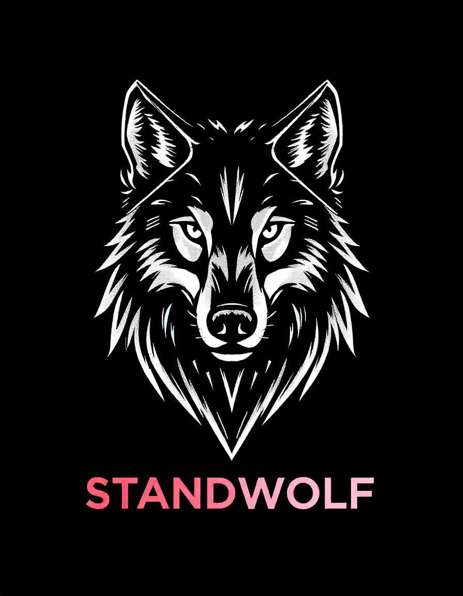

<!DOCTYPE html>
<html lang="pt-br">
<head>
    <meta charset="UTF-8">
    <meta name="viewport" content="width=device-width, initial-scale=1.0">
    <title>StandFang - Início</title>
    <link rel="stylesheet" href="Styles.css">
</head>
<body>
    <!-- Cabeçalho -->
    <!-- Conteúdo permanece igual -->
</body>
</html>
    <header>
        <div class="header-left">
            
            <h1>StandFang</h1>
        </div>
        <nav>
            <ul class="menu">
                <li><a href="index.html"><b>Início</b></a></li>
                <li><a href="about.html"><b>Sobre</b></a></li>
                <li><a href="projects.html"><b>Projetos</b></a></li>
            </ul>
        </nav>
    </header>
    <main>
        <section class="about">
            <div class="profile-section">
                
                <div>
                    <h2>Quem Sou Eu?</h2>
                    <p>Meu nome é Ismael Paulo, tenho 26 anos e sou de Águas Lindas de Goiás. Desde cedo, sempre fui uma pessoa curiosa, com uma paixão por aprender e ensinar. Minha trajetória começou na educação, onde me formei em Pedagogia e adquiri experiência ensinando crianças e adolescentes, tanto em sala de aula quanto em reforço escolar. Essas vivências moldaram meu senso de responsabilidade e me ensinaram a importância da comunicação clara e da criatividade na transmissão de ideias.</p>
                   <p>Apesar da minha formação inicial na área de Educação, sempre tive um lado artístico e investigativo que me levou a explorar novos horizontes. Foi assim que encontrei o Audiovisual, uma área que combina criatividade com técnica, algo que ressoa profundamente com minha personalidade. O nome deste site, StandFang, reflete isso: ele simboliza a conexão com o lobo, um animal que representa força, lealdade e adaptabilidade — características que vejo em mim e que guiam meu trabalho e minha vida.</p>
                </div>
            </div>
        </section>

        <section class="about-details">
            <h2>Coisas Aleatorias</h2>
            <div class="topic">
                <button class="toggle-button">Abacaxi</button>
                <p class="hidden-text">Eu amo abacaxi por sua doçura e frescor únicos.</p>
            </div>
            <div class="topic">
                <button class="toggle-button">Café</button>
                <p class="hidden-text">Muito ruim, odeio café.</p>
            </div>
            <div class="topic">
                <button class="toggle-button">Música</button>
                <p class="hidden-text">A música me inspira e ajuda a criar histórias incríveis.</p>
            </div>
            <div class="topic">
                <button class="toggle-button">Filmes</button>
                <p class="hidden-text">Os filmes são uma grande fonte de aprendizado e criatividade para mim.</p>
            </div>
        </section>
    </main>

    <!-- Rodapé -->
    <footer>
        <p>&copy; 2024 StandFang | Todos os direitos reservados.</p>
    </footer>

    <!-- JavaScript -->
    <script src="script.js"></script>
</body>
</html>